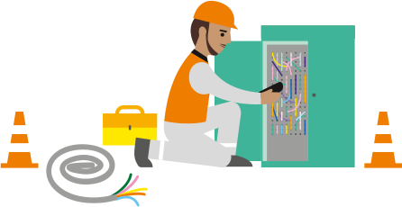

Bienvenue sur mon Portfolio
HEU--COMBE NOLAN
Étudiant en BUT Réseaux et Télécommunications à l’IUT de Villetaneuse
En alternance chez Orange en tant que Technicien Réseau Structurant



Étudiant en 3ᵉ année de BUT Réseaux et Télécommunications à l’IUT de Villetaneuse, je développe mes compétences techniques et opérationnelles en alternance chez Orange, en tant que Technicien Réseaux Structurant. Intégré dans un environnement dynamique et collaboratif, je participe activement à la production, la maintenance et la supervision d’équipements réseau tels que DSLAM, routeurs, multiplexeurs ou faisceaux hertziens. Ces interventions, pilotées via un système de tickets, m’ont permis de comprendre l’importance de chaque action dans la chaîne de communication.
Grâce à ma formation universitaire, j’ai acquis de solides bases en protocoles réseau, cybersécurité, routage, systèmes Linux et téléphonie IP. En parallèle, j’ai renforcé ces acquis via des formations internes chez Orange, notamment sur la sécurité et les infrastructures opérateurs. Rigoureux, autonome et passionné par les technologies télécoms, je souhaite à terme évoluer vers un poste de chef de projet réseau, en contribuant à la conception et au pilotage de solutions innovantes, fiables et évolutives.

Mention Très Bien

Orange, équipe d'intervention entreprise 77/93
Mention Bien
En cours (Alternance chez Orange)
C++, Python, Bash

HTML, CSS, JavaScript (base)

Linux (Debian/Ubuntu), Windows

TCP/IP, UDP, DHCP, DNS, ICMP, HTTP, FTP, SSH

VLAN, NAT, OSPF, RIP, BGP, STP

SIP, RTP, QoS, IPBX, visioconférence

VirtualBox, Docker, GNS3, Ansible

VPN, IPsec, Wireshark, SNMP, Syslog, pare-feu
Mise en place de services réseau (DHCP, DNS, NAT) sur des machines virtuelles sous Linux.
Configuration d’un routeur Cisco avec VLANs et routage inter-VLAN.
Supervision d’un réseau via l’outil Centreon ou Wireshark en TP.
Utilisation d’outils comme GNS3 ou Cisco Packet Tracer pour simuler des topologies réseau.
Gestion des droits utilisateurs et de la sécurité d’un réseau local dans un environnement Windows Server.
Conception d’un réseau local complet pour une entreprise fictive avec topologie hiérarchique.
TP de mise en place d’une liaison fibre optique simulée et test de connectivité.
Configuration d’un point d’accès Wi-Fi sécurisé avec authentification WPA2.
Réalisation d’un câblage RJ45 et vérification avec un testeur de câble en atelier.
Étude des couches physiques et liaison dans des travaux pratiques sur le modèle OSI.
Développement de scripts Python pour automatiser la configuration réseau.
Création d’un mini-site web HTML/CSS dans le cadre d’un projet de 1ʳᵉ année.
TP de programmation orientée objet en C++ ou Python pour gérer des périphériques réseau.
Traitement de données CSV liées à des équipements réseau (projet data).
Simulation de requêtes API dans un contexte réseau (SDN / supervision).
Déployer une solution de téléphonie IP avec Asterisk ou 3CX.
Mettre en œuvre la QoS pour garantir la qualité des appels VoIP.
Configurer les protocoles SIP et RTP entre plusieurs sites.
Intégrer la visioconférence dans une solution collaborative.
Gérer les plans de numérotation multi-sites et la portabilité.
Projet de fin d’année : interconnexion de deux réseaux distants avec sécurisation.
Configuration de routeurs avec OSPF pour assurer le routage dynamique.
Mise en place de solutions de virtualisation (VirtualBox, Docker) dans un réseau simulé.
Utilisation d’une base de données SQL pour gérer les équipements d’un réseau.
Rédaction de documentation technique et schémas réseau pour assurer l’interopérabilité des systèmes.
Maintenance curative : diagnostic de pannes, interventions physiques, respect des GTR.
Installation et mise en service d’équipements cœur de réseau (DSLAM, MTS, etc.).
Suivi et mise à jour des interventions dans les bases de données techniques.
Maintenance préventive : contrôle qualité, coordination avec les sous-traitants.
Supervision et analyse d’incidents avec les services réseau (Conduite d’activité, ASI).
Gestion du matériel : mise à jour logicielle, inventaire, documentation technique.
Application des normes sécurité, qualité et environnement en intervention terrain.
Le professionnel R&T est régulièrement amené à traiter des données provenant du système d’information de l’entreprise pour ses besoins personnels ou ceux de ses collaborateurs. Ces données peuvent par exemple être liées à l’infrastructure de son réseau (état des équipements, des machines) ou aux utilisateurs. Généralement obtenues sous forme brute, elles sont ensuite traitées avec des objectifs très variés (net- toyage des données, extraction d’informations comptables, archivage, ...) pour être réutilisées à d’autres fins ou être présentées dans des vues synthétiques. Ces traitements peuvent être récurrents (mensualisation de bilan, sauvegarde de données pério- dique, ...) et gagnent à être automatisés. Le professionnel R&T doit donc développer des scripts ou des programmes pour gérer de façon efficace le traitement de ces données.ici
Développement d'un site web pour automatiser le traitement et la visualisation des données.
Création d'une vidéo sur l'hygiène informatique, mettant en lumière le phishing.
Analyse approfondie d'une attaque DDoS et propositions de défense numérique.
Automatisation et Gestion Centralisée des Connexions Internet pour Start-Up : Attribution d'Adresses IP et Gestion Clients via Base de Données SQL

Création et Configuration d’un Réseau Informatique Complet avec Fonctionnalités Avancées